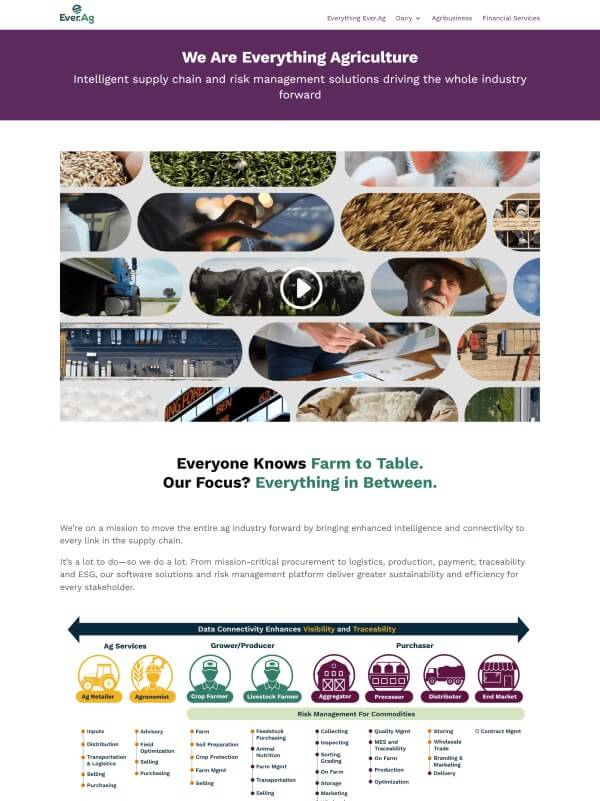
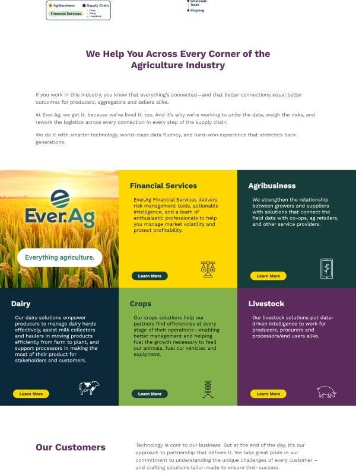
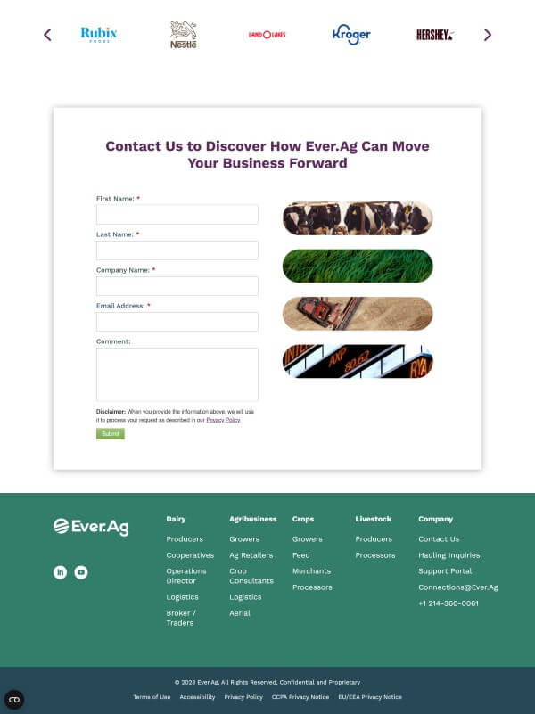
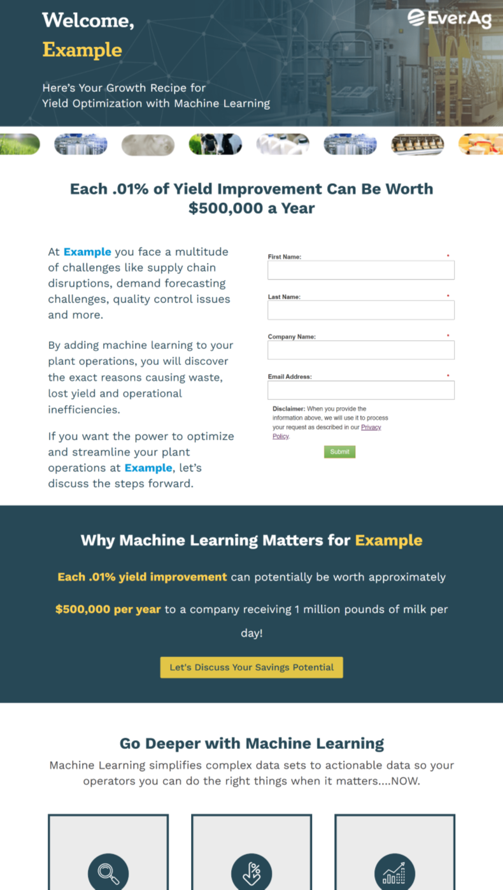
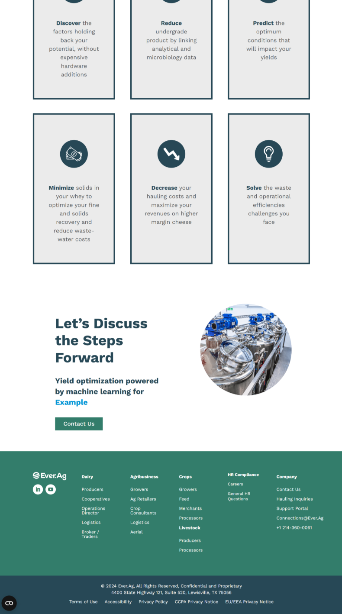

Ever.Ag
Web Design Intern, May 2023- Present



Summer Brand Campaign
For this brand campaign, the Ever.Ag marketing team wanted to create a micro-site dedicated to brand awareness
- I was tasked with creating wire-frames and hi-fi models to present regularly, with an iteration process that involved the feedback of employees throughout the company.
- Then, I was tasked with using WordPress, Divi, and some custom coding to make live versions of these mock-ups
- The project launched, and the brand campaign won a 2023 MarCom Platinum award in Team Achievement | 910. Team’s Specific Project Achievement


Fall Campaigns
My internship term was set to end, but I was asked if I wanted to stay on and continue with WordPress operations, so I continued!
- During the fall, I worked on several ABM campaigns where I had to create new pages, often based around a specific product.
- I learned to implement UTM parameters to include personalization to the pages, and include company names throughout the pages designed for them.
- Until November, I was the sole Wordpress designer and dev, and then I began to learn under the Digital & Design Senior Marketing Manager, who I work with closely now.
Spring - General Web Assistance
This was the semester I graduated, so I primarily worked on assisting tasks in smaller ways
I would make tweaks or complete requests that would come in through e-mail, and take on tasks that I could allocate the right amount of time and effort time - given the graduating semester madness.
Summer - Email marketing, landing page creation, and a site migration!
Now that I was able to work on a full-time schedule, I took on a couple more responsibilities
- I was added onto the task cards that involved designing/creating emails in the program Knak. This was a bit more creative than my last job, which had set templates that would never change.
- I also continued to create more pages, for various reasons including: webinar registrations and landing pages
- And finally, Ever.Ag is launching site with a brand new design, and therefore all the pages had to be re-done in a staging server, where I am transferring content and reporting any strange errors.